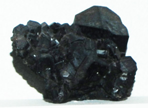

|

| NaCa2(Mg,Fe)5(Si7Al)O22(OH)2
Edenite is a silicate with composition NaCa2(Mg,Fe)5(Si7Al)O22(OH)2 . This complex silicate has seven of the big 8 elements in the Earth's crust in one mineral! The sample above is about 5x8 cm and is from Finland. The sample is on display in the Smithsonian Museum of Natural History.
|